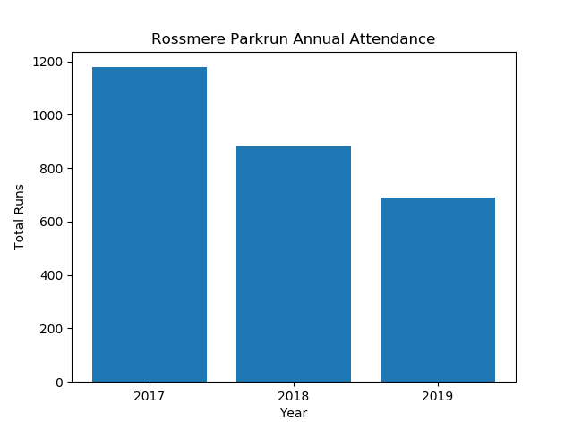
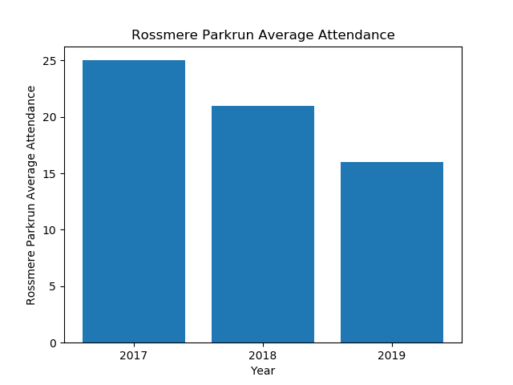
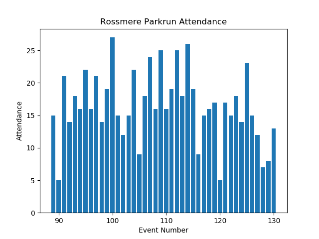
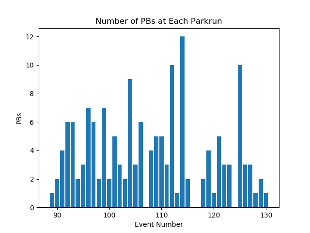
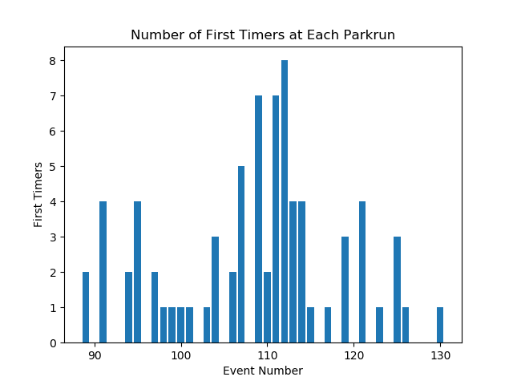

Annual Summary for Rossmere Parkrun
Annual Attendance
| Year | Number of Events | Average Attendance | Number of Runs | Number of Volunteers | Number of PBs | Number of First Timers |
|---|
| 2017 | 46 | 25 | 1178 | 835 | 217 | 233 |
| 2018 | 42 | 21 | 884 | 668 | 183 | 113 |
| 2019 | 42 | 16 | 691 | 564 | 156 | 76 |


Statistics for Events between 01/01/2019 and 31/12/2019
Max Attendance = 27, Min Attendance = 5



Top Participants
Top Volunteers
Total number of volunteering events
| Name | Number of Runs | Number of Volunteers |
|---|
| 1 | Steven MORRISON | 0 | 41 |
| 2 | Audrey STREETING | 0 | 37 |
| 3 | Heidi MORRISON | 0 | 31 |
| 4 | Neil HARKER | 0 | 28 |
| 5 | Carl MARCHANT | 0 | 27 |
| 6 | Angie REEVE | 0 | 23 |
| 7 | Alison EATON | 0 | 20 |
| 8 | Yvonne TINDALE | 0 | 20 |
| 9 | Christine SIRS | 0 | 19 |
| 10 | Kate SIRS | 0 | 19 |
| 11 | Les REEVE | 0 | 19 |
Most Runs
Total Number of Runs in the period
| Name | Number of Runs | Number of Volunteers |
|---|
| 1 | Evan HUGHES | 32 | 0 |
| 2 | Macie SMITH | 32 | 0 |
| 3 | Olivia BROWN | 24 | 0 |
| 4 | Anna PARKER | 23 | 0 |
| 5 | Athol PARKER | 20 | 0 |
| 6 | Freddie ELSDON | 19 | 0 |
| 7 | Hope PARKER | 19 | 0 |
| 8 | Maisie MACRAE | 19 | 0 |
| 9 | Noah SWINBOURNE | 18 | 0 |
| 10 | Joseph SWINBOURNE | 16 | 0 |
Time on Feet
Total time spent running in the period.
| Name | Time on Feet (hours) |
|---|
| 1 | Macie SMITH | 6.7 |
| 2 | Evan HUGHES | 5.9 |
| 3 | Olivia BROWN | 5.7 |
| 4 | Anna PARKER | 4.7 |
| 5 | Maisie MACRAE | 4.1 |
| 6 | Athol PARKER | 4.0 |
| 7 | Noah SWINBOURNE | 3.6 |
| 8 | Harry READMAN | 3.4 |
| 9 | Hope PARKER | 3.3 |
| 10 | Joseph SWINBOURNE | 3.2 |
Keenest
Total Participation (run + volunteer). Note: Running and volunteering on the same day counts.
| Name | Number of Runs | Number of Volunteers | Total |
|---|
| 1 | Steven MORRISON | 0 | 41 | 41 |
| 2 | Audrey STREETING | 0 | 37 | 37 |
| 3 | Evan HUGHES | 32 | 0 | 32 |
| 4 | Macie SMITH | 32 | 0 | 32 |
| 5 | Heidi MORRISON | 0 | 31 | 31 |
| 6 | Neil HARKER | 0 | 28 | 28 |
| 7 | Carl MARCHANT | 0 | 27 | 27 |
| 8 | Olivia BROWN | 24 | 0 | 24 |
| 9 | Angie REEVE | 0 | 23 | 23 |
| 10 | Anna PARKER | 23 | 0 | 23 |
Consistency
Smallest variation (standard deviation) in run times.
| Name | Run Time SD (sec) | Number of Runs |
|---|
| 1 | Matilda-Mae ELSDON | 18.5 | 10 |
| 2 | Georgia CORNFORTH | 27.0 | 11 |
| 3 | Daniel BLANCHARD | 28.2 | 11 |
| 4 | Macie SMITH | 34.3 | 31 |
| 5 | Evan HUGHES | 35.9 | 32 |
| 6 | Maisie MACRAE | 36.0 | 18 |
| 7 | Dexter MACRAE | 38.2 | 10 |
| 8 | Freddie ELSDON | 41.4 | 19 |
| 9 | Joseph SWINBOURNE | 51.1 | 16 |
| 10 | Hope PARKER | 52.0 | 19 |